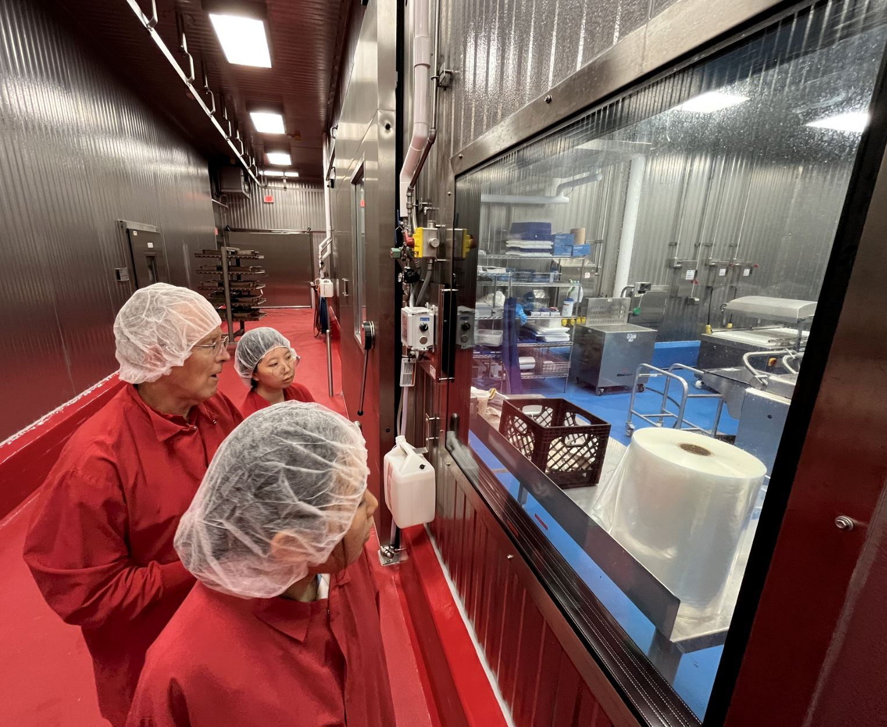
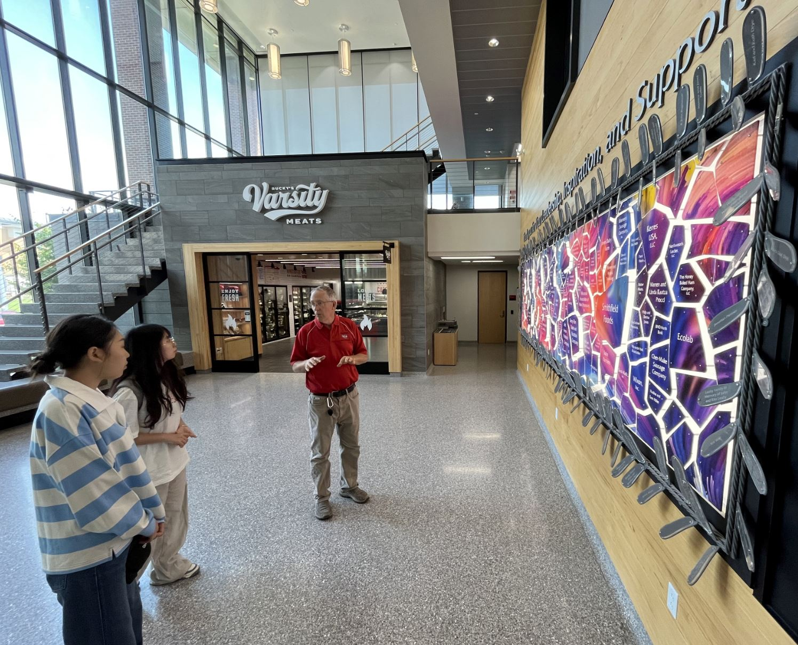

Laboratory News & Updates
Recent achievements, awards, presentations, outreach activities, and announcements from the TSU Meat Science Laboratory.
TSU Meat Science Visited University of Wisconsin-Madison



The Meat Science and Animal Biologics Discovery (MSABD) building at the University of Wisconsin-Madison is a state-of-the-art, $57.1 million facility opened in 2020 to support the state's agriculture and livestock industries. The 67,540-square-foot facility is uniquely designed to house both a USDA-certified meat processing plant and a Biosafety Level 2 (BSL-2) food safety lab under one roof. This setup allows researchers to study dangerous foodborne pathogens on one side of the building while developing advanced meat processing and animal biologics technologies on the other. Serving as a hub for education, cutting-edge research, and industry outreach, the building also features Bucky's Varsity Meats, a popular public retail shop that sells meat products made directly on-site by students and staff.
TSU Meat Science Presented at AMSA RMC 2026
At the 79th Annual American Meat Science Association (AMSA) Reciprocal Meat Conference (RMC), held from June 21–24, 2026, in Amarillo and Canyon, Texas, the Tennessee State University (TSU) Meat Science program delivered prominent research presentations and active participation. Co-hosted locally by West Texas A&M University, the event served as a major stage for TSU faculty, undergraduate researchers, and graduate students.